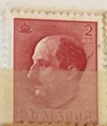
| SOURCE | TITLE| IMAGE MATCH | click to source page |
| Colnect | Bulgaria : Stamps [Year: 1941] [1/4] : Colnect 📮 | 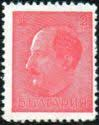 |
| eBay | Greece Scott 498-500 Unused hinged. | eBay | 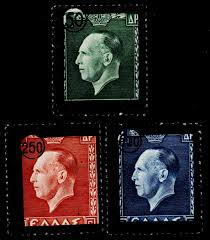 |
| Colnect | Bulgaria : Sellos [Año: 1941] [1/4] : Colnect 📮 | 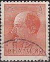 |
| eBay | Caius Julius Caesar Stamp Poste Italiane Cent. 20 Red Mint Unhinged | eBay | 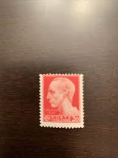 |
| Find Your Stamps Value | Value of Leuchttürme arngast stamps | 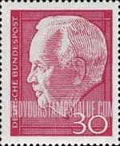 |
| eBay | Carmine Italian Stamps for sale | eBay | 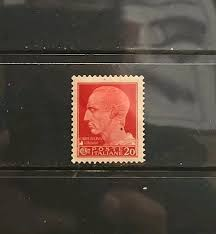 |
| eBay | GERMANY Scott 702-21 Michel 177-96 Used | eBay | 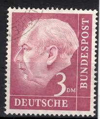 |
| Find Your Stamps Value | Value of kuk militar post 28 juni 1914 stamps | 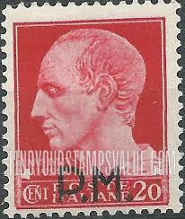 |
| Linns Stamp News | Overprints and surcharges: provisionals have many functions | 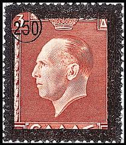 |
| HipStamp | Browse Listings in Europe > Bulgaria / HipStamp | 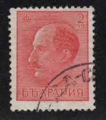 |
| Dreamstime.com | Tsar Boris III, Serie, Circa 1931 Editorial Image - Image of boris, correspondence: 145854380 | 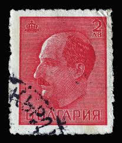 |
| eBay | GREECE 499 - King George II Memorial (pc28218) | eBay | 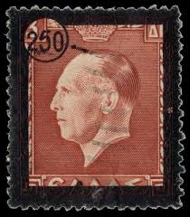 |
| HipStamp | Great Britain Scott#231 1936 1d King Edward Viii - MNH | Great Britain, General Issue Stamp / HipStamp | 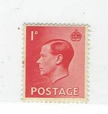 |
| Assessment help for rare Mi:de-sl 38y stamp needed | 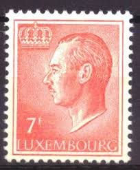 | |
| suprememagazine.news | Britain to introduce King Charles stamps, banknotes gradually | 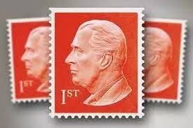 |
| eBay | GERMANY 881 - President Heinrich Lubke "1964 Carmine" (pc16137) | eBay | 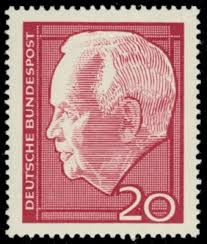 |
| eBay | WWII Norwegian Stamps for sale | eBay | 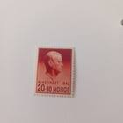 |
| Colnect | Stamp: Mourning Issue for the death of King George II (Greece(King George II - Mourning issue) Mi:GR 539,Sn:GR 499,Yt:GR 543,Sg:GR 657,Kar:GR 668,Un:GR 543 📮 | 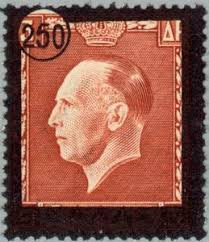 |
| Free stamp catalogue | Stamps with the theme Kings & Queens (Royalty) - Freestampcatalogue.com - The free online stampcatalogue with over 500.000 stamps listed. | 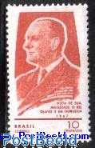 |
| Federal University of Agriculture, Abeokuta | EDWARD VIII STAMPS |  |
| eBay | BRD FRG #Mi185xWv MNH 1954 Prof Dr Theodor Heuss 1st President [710] | eBay | 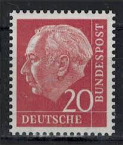 |
| Northwind Stamps | NOB25-272 Norway Scott # B25-27 VF MH, Vidkun Quisling 1942 – Northwind Stamps | 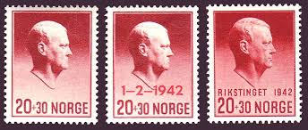 |
| eBay | Red 1 1/2 d Denomination British Stamps for sale | eBay | 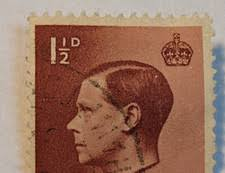 |
| HipStamp | Luxembourg Scott 573 MNH** 1975-1991 Grand Duke 12F stamp | Europe - Luxembourg, General Issue Stamp / HipStamp | 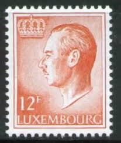 |
| eBay | 1936 G.Britain King Edward VIII 1 1/2d S#232 Postage Stamp RARE USED VF | eBay |  |
| eBay | 1936 G.Britain King Edward VIII 1 1/2d SC#232 Postage Stamp RARE USED VF | eBay | 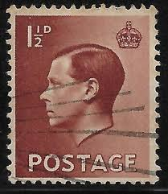 |
| eBay | Stamp Great Britain 1936 1d King Edward VIII Used (D1) | eBay | 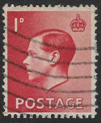 |
| Etsy | 18 King George VI - One-shilling Stamps - Great Britain - 1939 - SCV - Etsy Canada | 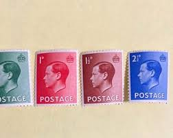 |
| Stampedia | stampedia LUXEMBOURG STAMP catalog | 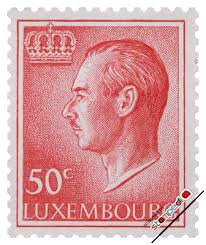 |
| History Hit | British Stamps: A History in Pictures | History Hit | 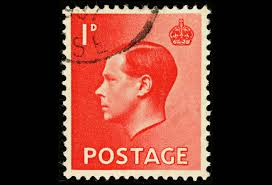 |
| HipStamp | Berlin 9N211-12 Unused Set Lubeke (B0245) | Europe - Germany & Colonies - Berlin, General Issue Stamp / HipStamp | 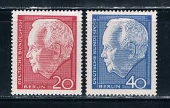 |
| Colnect | Stamp: Italian occupation 1941 issue (Ionian Islands, Italian Occupation(Corfu Issue) Mi:IT-IO CO 4,Yt:IT-IO CO-18,Sg:IT-IO COR 20,Kar:IT-IO 4,Un:IT-IO CO 18,Sas:IT-IO CO 18 📮 | 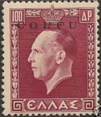 |
| eBay | Las mejores ofertas en Royalty usado británicas de Eduardo VIII Sellos | eBay | 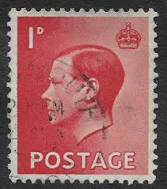 |
| eBay | Royalty Used British Edward VIII Stamps for sale | eBay | 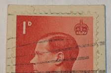 |
| Amazon.com | Amazon.com: FRD (FR.Germany) 196x unmounted Mint/Never hinged ** MNH 1954 President Heuss (I) (Stamps for Collectors) : Toys & Games | 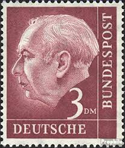 |
| PicClick UK | Rare Edward Viii Stamps FOR SALE! - PicClick UK | 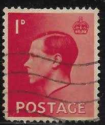 |
| Fandom | Salaah al-Farah | Historica Wiki | Fandom | 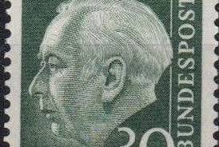 |
| Bob Shop | England - England- Used- Cancel- Postmark- Post Mark-Thematic was listed for 1.00 on 12 Dec at 00:31 by DeonRickTraders in Pretoria / Tshwane (ID:629659858) | 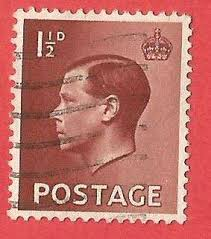 |
| 123RF | Cancelled Postage Stamp Printed By Germany, That Shows Ernst Junger, Circa 1998. Stock Photo, Picture and Royalty Free Image. Image 54915732. | 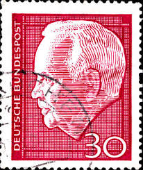 |
| Shutterstock | 10 Heinrich Lubke Karl Royalty-Free Images, Stock Photos & Pictures | Shutterstock | 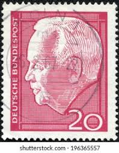 |
| Stamp Auction | SAN Unattended Live Bidding Catalog Level 3 | 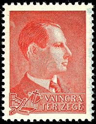 |
| Prince George of Greece (later King George II of the Hellenes) (1890-1947) | 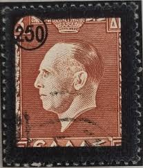 | |
| Osta | Norra 1942. Vidkun Quisling Poliitik Mi271 MH (247290802) - Osta.ee | 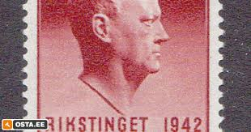 |
| HipStamp | Luxembourg 422: 2f Grand Duke Jean, used, F-VF | Europe - Luxembourg, General Issue Stamp / HipStamp | 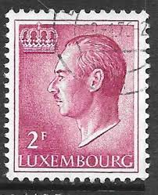 |
| Stampedia | stampedia NORWAY STAMP catalog | 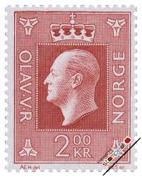 |
| HipStamp | Norway 1970 Used NK643 King Olav V Dark brown red 2 Krone (SC539)*STOCK IMAGE* | Europe - Norway, General Issue Stamp / HipStamp | 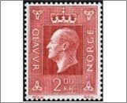 |
| bwdavis.us | WW Stamps Great Britain - Collectibles of Bwdavis | 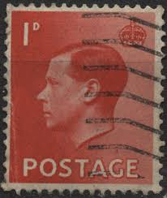 |
| sellosmundo.com | Nederland - Juliana Regina. Netherlands Europe ref. 153593 | 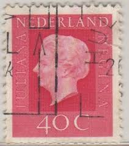 |
| 38 Hobby ideas | postage stamps, stamp collecting, philately |  | |
| eBay | GERMANY 703 - President Theodor Heuss "1954 Orange Brown" (pf23413) | eBay | 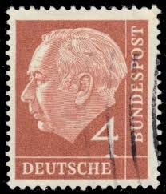 |
| tagula blue stamps | KEVIII Archives - TAGULA BLUE STAMPS | 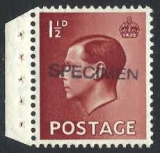 |
| eBay | Norway Semi-Postal Stamps for sale | eBay | 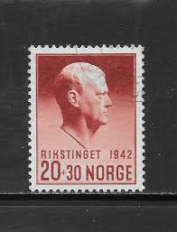 |
| Federal University of Agriculture, Abeokuta | EDWARD VIII STAMPS | |
| CollectorBazar | GB UK KING GEORGE 1 D USED | |
| Poppe Stamps | Poppe Stamps: Great Britain, 1936, 459, King Edward Viii, King Edward Viii - stamps for sale by theme and country | |
| Alamy | Postage stamp from Great Britain in the King Edward VIII - Definitives series issued in 1936 Stock Photo - Alamy | |
| eBay | Travelstamps: Luxembourg Stamps SG 758, 50c Grand Duke Jean Mint MNH OG | eBay | |
| HipStamp | Browse Listings in Topicals / HipStamp | |
| Poppe Stamps | Poppe Stamps: German Federal Republic, 1954, 1114, Presidents, Numbers - Values And Letters - Characters - stamps for sale by theme and country |